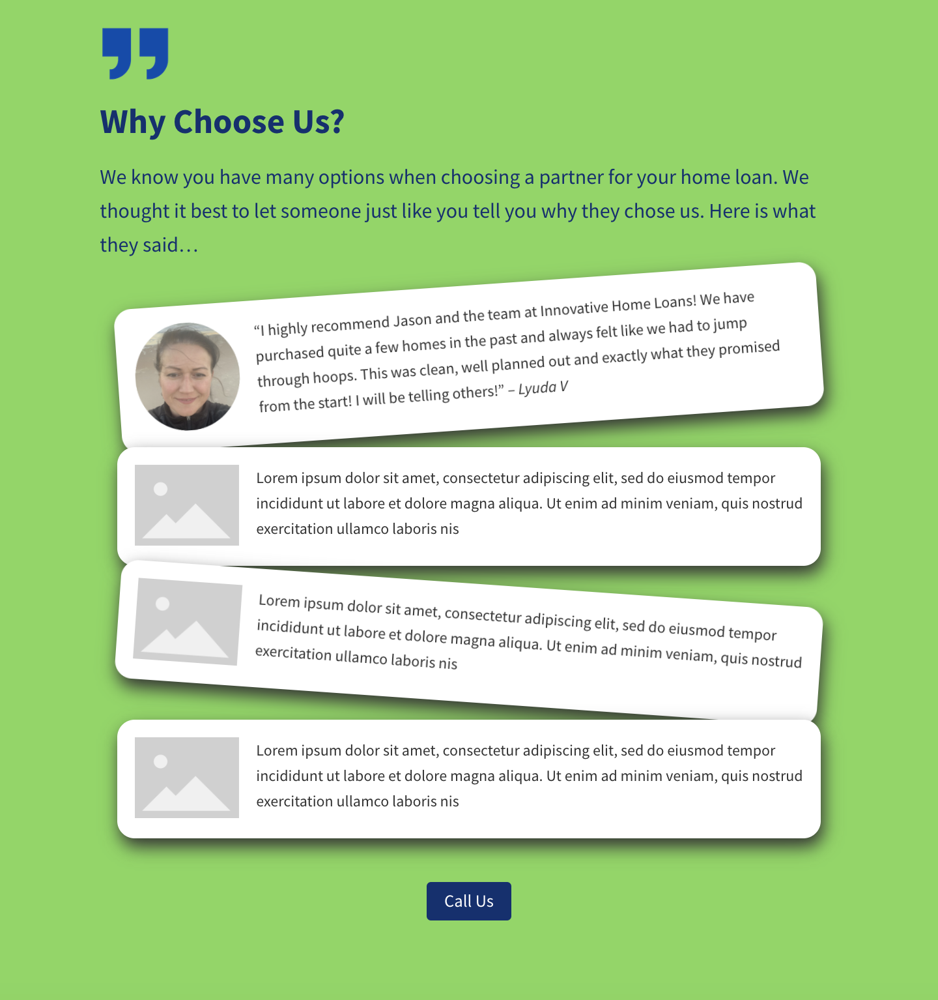

CSS3 Transforms and Transitions
- The transform property " let's you translate, rotate, scale, and/or skew any element on the page."
- Translations
- let you move elements left/right/up/down.
- Does not affect the flow of the document.
- Translation only moves elements relative to their current position.
- translate(x,y) function - moves elements x from the left, and y from the top.
- eg. transform: translate(34px, -24px);
- translateX() function if you would just like to move an element horizontally.
- translateY() function if you would just like to move an element vertically.
- Scaling
- scale(x,y) function scales an element by the given arguments, horizontally (x)
then vertically (y).
- If you one value is provided, it is used both horizontally and verically.
This maintains the element's original aspect ratio.
- Can also use the scaleX() and scaleY functions if all you want to do is
scale the element one way.
- Scaling also has no impact on the document flow - text around it will not
accomodate it's size.
- The default point of origin is the element's center.
- Rotation
- rotate() fucntion rotates an element around the point of origin
by the given angle value. The default point of origin is the element's center.
- Skew
- skew(x,y) specifies a skew along the x and y values.
Put your
dukes
up, sire
I learned about transformations and animations last year in advanced CSS.
I used them at work this week:
